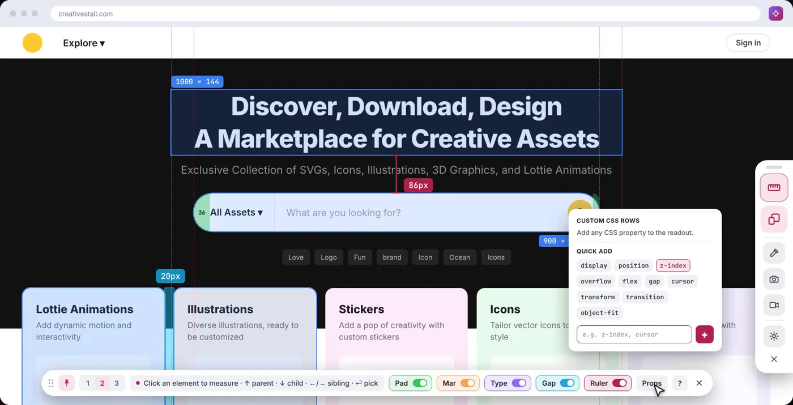
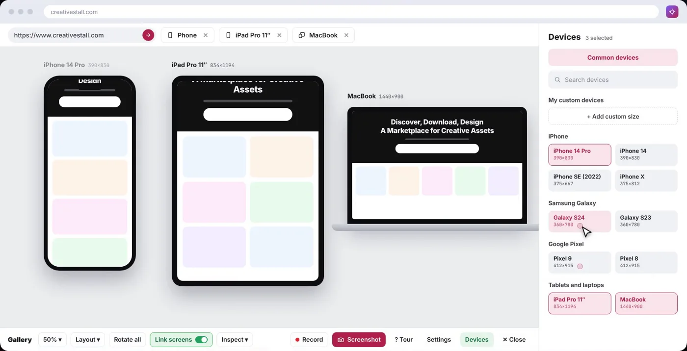
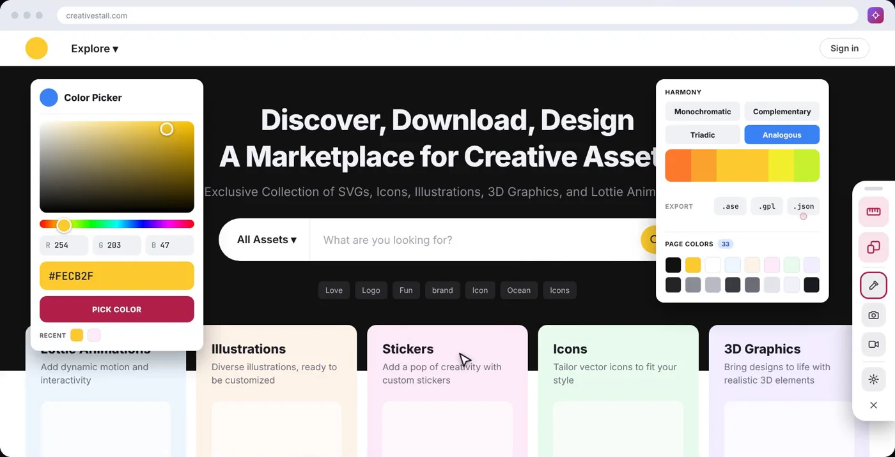
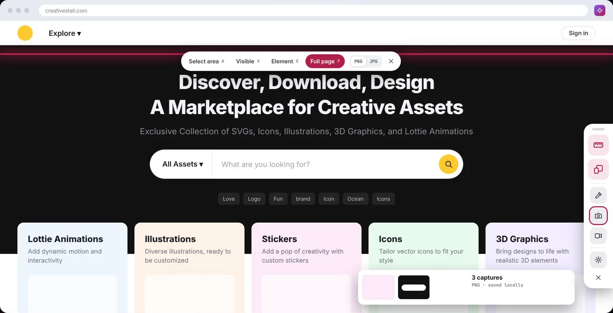
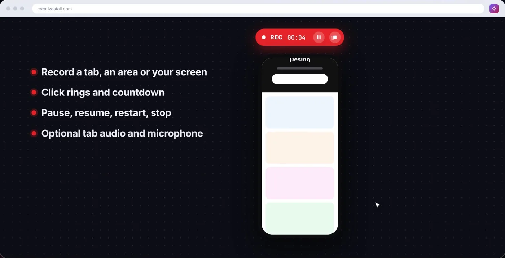

Check every pixel of a page without leaving it.
Picky is a toolbar for the checks you do on every page: the gap between two elements, the exact color, how it looks on a phone, a screenshot to send. One extension instead of four.
Open it on any page with Alt + Shift + M. Free to use.
Orbit desk lamp
Warm light, one dial, a base that stays put.
button
- Size
- Padding
- Font
- Text
- Contrast
This is a live demo. Point at the card, the title or the button, and the gaps and values come from the page itself.
See it on a real page.
Recorded from the extension itself. Start with the full tour, or jump to one tool.
Five tools. One key each.
Open Picky with Alt + Shift + M, then press the key for the tool you want.





Click two elements to get the exact pixel gap between them, drawn with scale marks. Point at one to read its size, typography and box model, and change values live to try an idea.
What you get when you select something.
Point at any element and Picky reads it for you. Here is each part, one at a time.
Orbit desk lamp
Warm light, one dial, a base that stays put.
button.buy
- Size
- 120 × 48
- Padding
- 12 20
- Content
- 80 × 24
- Font
- 15 / 600
- Line height
- 24
button.buy
- background
- var(--brand)#b02346
- color
- var(--on-brand)#ffffff
- radius
- var(--radius-md)10px
Defined in tokens.css, line 12
p.blurb
- Title
- Button
- Blurb
The blurb fails AA at 15px. Darken it to pass.
button.buy
- background
#b02346#8f1c39
- box-shadow
none0 0 0 5px
- transform
nonescale(.97)- background
#b02346#8f1c39
Each state is previewed on the live page.
button.buy
- Padding Y
- ‹12›
- Padding X
- ‹20›
- Size
- 120 × 48
The button changes as the number moves. Reload the page and it is back to normal.
button.buy
.buy { padding: 12px 20px; border-radius: 10px; background: #b02346; color: #ffffff; font-size: 15px; font-weight: 600;}
Copied
An illustration on the same sample page, not a screen recording.
Devices drawn at their real sizes.
Responsive preview renders your page at each device's true viewport, so a phone looks like a phone next to a laptop.
Free covers every tool. Pro raises the limits.
Nothing is locked behind a door. The free plan gives you a working amount of each tool.
Free
Every tool, a working amount of each.
- Video clips up to 30 seconds
- 3 devices in the gallery
- 5 page colors listed
- 3 CSS variables listed
- Copy as CSS
Pro
The same tools with the limits raised.
- Video clips up to 5 minutes
- More devices in the gallery
- More page colors and CSS variables
- Copy as CSS, Tailwind, SVG and JSON
You can choose a plan from Options, then Account, in the extension. Signing in is optional and syncs your settings across browsers.
Your pages stay on your device.
Picky reads the page you're on to do its job, and that analysis never leaves your browser.
analytics, trackers or telemetry. Not even anonymous ones.
things that ever contact a server, and you start every one.
days until a shared screenshot link expires. Picky asks before it uploads, because it can't take a link back sooner.
Add Picky to your browser.
It works in Microsoft Edge and Google Chrome.
Picky can't run on browser pages like the new-tab page or the store itself. Try it on any normal website.
- Install Picky and pin it from the puzzle-piece menu.
- Open any website and click the Picky icon, or press Alt + Shift + M.
- Press M, R, C, S or V to pick a tool.